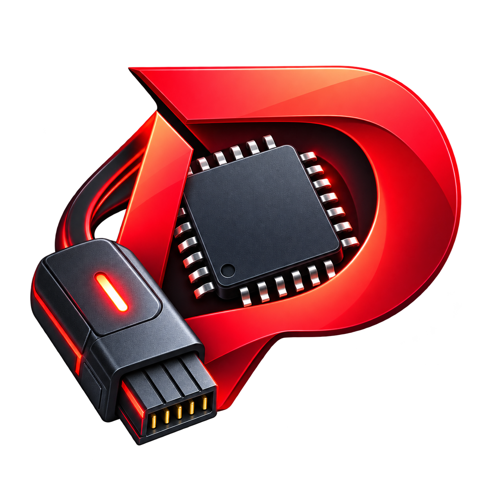
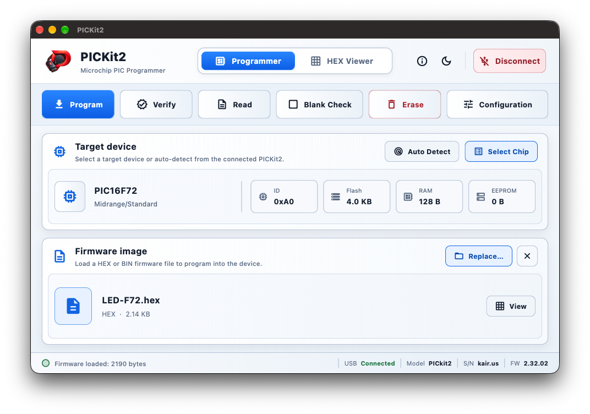
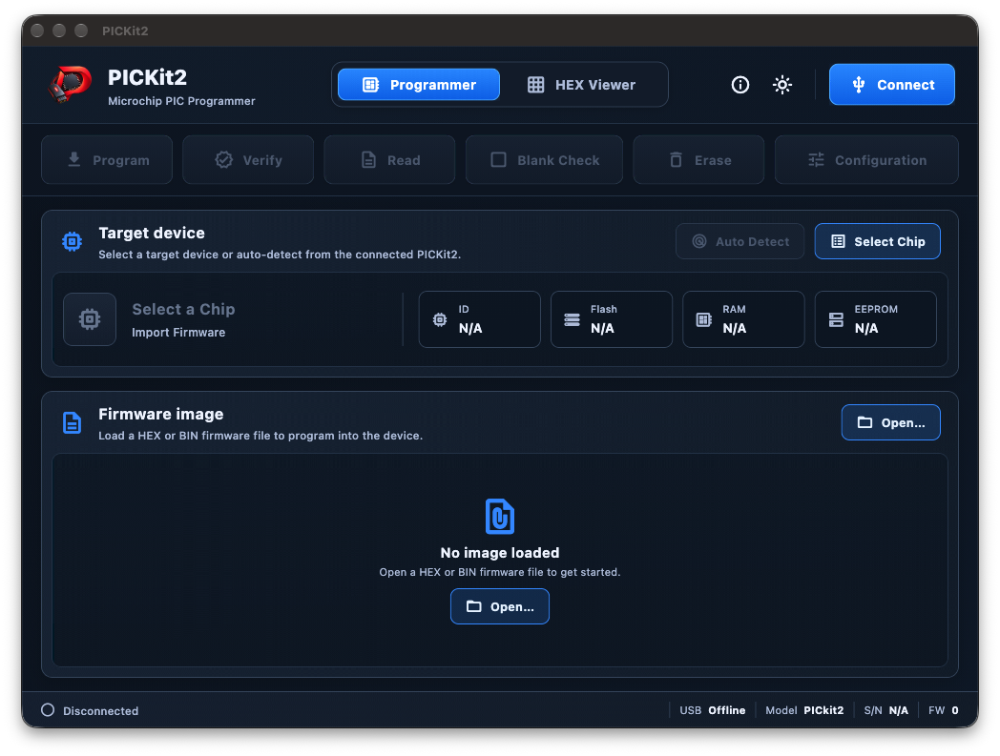

Target selection
Find the right device
Browse the chip catalog by family or model, or auto-detect a connected target. Device ID and memory sizes stay visible in the workspace.

PICKit2 Download v1.0.0PICKit2 desktop app / Version 1.0.0
A focused macOS workspace for programming PIC devices. Choose a target, load your image, run the operation, and inspect memory without leaving the app.
Universal build for Apple silicon and Intel. Requires macOS 12 or later. This release is not notarized; first launch may require Control-clicking PICKit2 and choosing Open.


Connect
PICkit 2 status
Select
Catalog + auto-detect
Program
Progress + verify
Inspect
Memory + HEX export
Built around the programming session
PICKit2 brings the everyday PICkit 2 workflow into one clear desktop interface, with device-aware actions and useful feedback at each step.
Target selection
Browse the chip catalog by family or model, or auto-detect a connected target. Device ID and memory sizes stay visible in the workspace.
Firmware
Open a firmware image, review its name, format, and size, then replace or clear it when the next build is ready.
Programming
Program the loaded image with progress reporting, or run verification independently. Read, erase, and blank-check are available as focused actions with confirmation for destructive operations.
Configuration
Change editable bits or enter a hexadecimal word directly. Device masks keep reserved bits protected, and values stay synchronized while you edit.
Memory viewer
Switch between Program, EEPROM, and Config data, and between the imported image and memory read from the target. Export read data as an Intel HEX file.
Connection status
Connection state, programmer model, serial number, firmware version, operation status, and write progress are surfaced in the desktop workspace.
In development
The Android app is being developed for USB-connected PICkit 2 hardware. This page will be updated when it is ready to download.